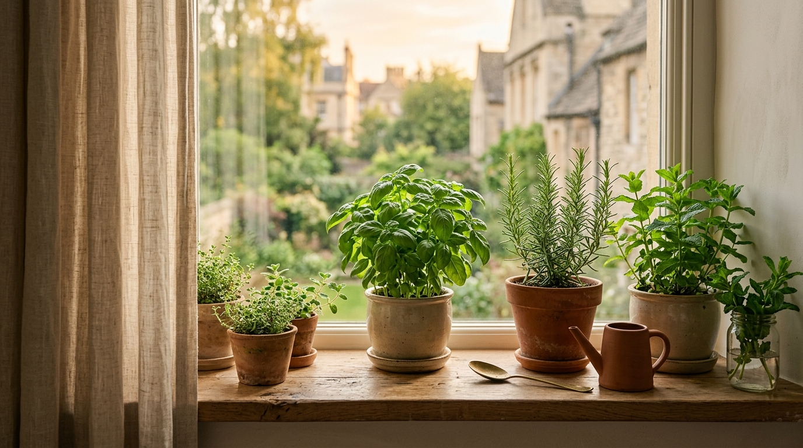

Colha temperos e ervas frescas na sua casa sem complicação e sem matar suas mudas.
Um método direto e sem frescura para quem trabalha fora, tem pouco espaço na varanda ou na janela e só dispõe de 5 a 10 minutos por semana.

Excelente notícia! O seu ambiente e o seu tempo são exatamente os necessários para cultivar as 7 Ervas que Cuidam de Você. Com vasos pequenos de boa drenagem e sem regas diárias excessivas, suas mudas não vão secar.
Você não tem o "dedo podre". Suas plantas só precisavam de um ambiente realista.
A maioria das pessoas compra um vasinho bonito no supermercado, coloca na pia ou na sala, rega todo dia achando que está cuidando bem e, em duas semanas, a planta seca ou apodrece.
Isso não acontece por falta de carinho. Acontece porque ninguém te ensinou as regras básicas de luminosidade e drenagem de pequenos espaços.
- Sem necessidade de quintal grande: funciona em peitoril de janela ou varanda compacta.
- Rotina de 5 minutos: você não precisa virar jardineiro profissional nem perder horas.
- As 7 espécies mais resistentes: selecionadas especificamente para não morrerem com facilidade.
As 7 Ervas que Você Vai Dominar
Escolhidas pelo equilíbrio perfeito entre utilidade na culinária, saúde natural e resistência em vasos:
O Que Você Recebe no Seu Acesso
📘 Guia Completo: 7 Ervas que Cuidam de Você
O passo a passo ilustrado de iluminação, substrato leve, rega correta e colheita sem estresse.
🎁 Bônus 1: Calendário Visual de Regas para Apartamento
Uma folha simples para você saber exatamente quando molhar e quando deixar a terra respirar.
🎁 Bônus 2: Guia de Poda e Multiplicação de Mudas
Como tirar galhos saudáveis para criar novos vasinhos sem gastar comprando na floricultura.
Pagamento único · Acesso vitalício ao material digital no seu e-mail
Comprar Agora com Acesso ImediatoGarantia Incondicional de 7 Dias
Se você abrir o guia e achar que ele não te ajudou a cuidar das suas ervas, a Hotmart devolve 100% do seu pagamento com um clique.
Dúvidas Frequentes
Eu moro em apartamento com pouca luz, vai dar certo?
Sim. O guia mostra exatamente como posicionar os vasos perto das janelas ou sacadas para aproveitar a luminosidade indireta necessária para cada uma das 7 espécies.
Como eu recebo o material?
Imediatamente após a confirmação do pagamento, você recebe os dados de acesso no seu e-mail cadastrado pela plataforma segura da Hotmart.
Quanto tempo preciso dedicar por semana?
Apenas 5 a 10 minutos por semana. O objetivo do guia é justamente evitar o excesso de regas e mexidas que costuma afogar as plantas.